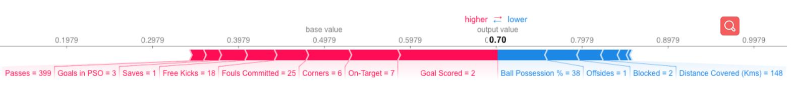
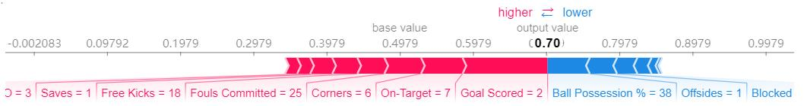
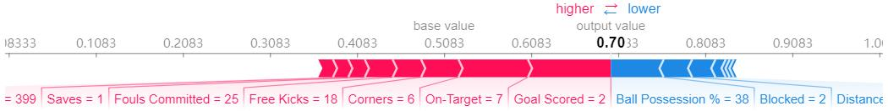

这是第四节：SHAP VALUES
用途
SHAP值（SHapley Additive exPlanations的缩写）从预测中把每一个特征的影响分解出来。可以把它应用到类似于下面的场景当中:
- 模型认为银行不应该给某人放贷，但是法律上需要银行给出每一笔拒绝放贷的原因。
- 医务人员想要确定对不同的病人而言，分别是哪些因素导致他们有患某种疾病的风险，这样就可以因人而异地采取针对性的卫生干预措施，直接处理这些风险因素。
工作原理
SHAP值通过与某一特征取基线值时的预测做对比，来解释该特征取某一特定值的影响。
我们对一个球队会不会赢得“最佳球员”称号进行了预测。
我们可能会有以下疑问：
- 预测的结果有多大的程度是由球队进了3个球这一事实影响的？
但是，如果我们像下面这样重新表述一下的话，那么给出具体、定量的答案还是比较容易的：
- 预测的结果由多大的程度时由球队进了3个球这一事实影响的，而不是某些基线进球数？
当然，每个球队都由很多特征，所以，如果我们能回答“进球数”的问题，那么我们也能对其它特征重复这一过程。
SHAP值用一种保证良好性质的的方式做这件事。具体而言，用如下等式对预测进行分解：
1 | sum(SHAP values for all features) = pred_for_team - pred_for_baseline_values |
即，用所有特征的SHAP值的加和来解释为什么预测结果与基线不同。这就允许我们用像下面这样的一幅图来对预测进行分解：

该怎么解释这幅图呢？
我们预测的结果时0.7，而基准值是0.4979。引起预测增加的特征值是粉色的，它们的长度表示特征影响的程度。引起预测降低的特征值是蓝色的。最大的影源自Goal Scored等于2的时候。但ball possesion的值则对降低预测的值具有比较有意义的影响。
如果把粉色条状图的长度与蓝色条状图的长度相减，差值就等于基准值到预测值之间的距离。
要保证基线值加上每个特征各自影响的和等于预测值的话，在技术上还是有一些复杂度的（这并不像听上去那么直接）。我们不会研究这些细节，因为对于使用这项技术来说，这并不是很关键。这篇博客对此做了比较长篇幅的技术解释。
代码示例
这里，我们用Shap库计算SHAP值。
沿用部分依赖图中用到的足球数据。
input:
1 | import numpy as np |
看一下数据集某一行数据上的SHAP值（就随意第5行吧）。在查看SHAP值之前，先看一下最原始的预测值。
input:
1 | row_to_show = 5 |
output:
1 | array([[0.3, 0.7]]) |
该球队有70%的可能性赢得这一奖项。
接下来是给上面那条预测计算SHAP值的代码。
1 | import shap # package used to calculate Shap values |
上面的shap_values对象是一个包含两个array的list。第一个array是负向结果（不会获奖）的SHAP值，而第二个array是正向结果（获奖）的SHAP值。通常我们从预测正向结果的角度考虑模型的预测结果，所以我们会拿出正向结果的SHAP值（拿出shap_values[1]）。
直接看原始array很麻烦，但是shap库提供一种不错的结果可视化的方式。
input:
1 | shap.initjs() |
output:

如果仔细观察一下计算SHAP值的代码，就会发现在shap.TreeExplainer(my_model)中涉及到了树。但是SHAP库有用于各种模型的解释器。
shap.DeepExplainer适用于深度学习模型shap.KernelExplainer适用于各种模型，但是比其它解释器慢，它给出的是SHAP值的近似值而不是精确值。下面是用KernelExplainer得到类似结果的例子。结果跟上面并不一致，这是因为KernelExplainer`计算的是近似值，但是表达的意思是一样的。
input:
1 | # use Kernel SHAP to explain test set predictions |
output:
